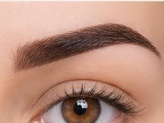
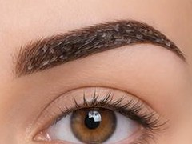
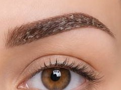
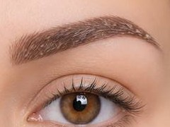
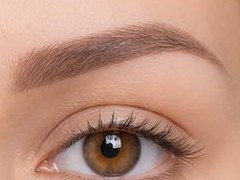
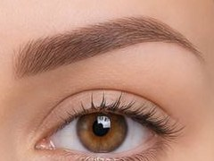
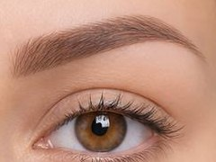

Что важно знать в первые минуты после процедуры
Если читаете это сразу после процедуры и в зеркале — слишком яркие брови, выдыхайте. Это не финал. Это пигмент с поверхности кожи, который ещё не прошёл заживление. Через 30 дней ваша бровь будет на 30–40% бледнее и натуральнее, чем сейчас.
Возможен лёгкий отёк, покраснение по контуру, зуд — это нормальная реакция кожи на работу. Уходит за 1–2 дня. Что я говорю всем своим клиентам сразу после процедуры: не оценивайте работу первую неделю. Серьёзно. Вы сейчас видите процесс заживления, а не результат. Эти две вещи выглядят по-разному.
День за днём — что происходит с бровями

Сразу после процедуры
Брови яркие, фактурные, насыщенные. Возможен лёгкий отёк, покраснение и зуд. На жирной коже — небольшая сукровица. Обрабатываем хлоргексидином, не мочим, не распариваем.

Цвет тускнеет, краснота уходит
Цвет становится более тусклым, более натуральным. Уходит покраснение и отёчность. Лёгкий зуд — это норма, кожа стягивается. Не чесать, не мочить, не распаривать.

Начинается шелушение
Образуются тонкие плёночки из ороговевшей кожи и излишков пигмента. Сходят сами в течение 2–3 дней. Срывать категорически нельзя — вместе с плёнкой уйдёт пигмент.

Корочки сошли, цвет прозрачный
Цвет под корочками кажется очень светлым, почти отсутствующим. Многие в этот момент пугаются. Это нормально — цвет прячется в коже и проявится позже.

Тихая фаза, цвет почти не виден
Кажется, что от работы ничего не осталось. Самая обманчивая фаза. Кожа восстановлена, но пигмент ещё не проявился. Запрет на бани, бассейны, солнце сохраняется.

Пигмент проявляется
Минеральные и гибридные пигменты «всплывают» в коже. Это процесс фагоцитоза: иммунные клетки переварили часть пигмента, часть оставили в эпидермисе. Цвет может «играть» от коричневого до серо-коричневого.

Финальный результат
Видна настоящая бровь: естественный, пудровый, теневой перманент. Через месяц приходим на коррекцию (не позже 1,5 месяцев). После коррекции эффект держится 1–1,5 года.
первые 3 дня
пантенол при стянутости
и солнца 2–3 недели
и не чесать
Два главных страха — и почему они не оправдываются
«Получится татуировка»
Самый частый страх клиента — получить по заживлению не натуральный перманентный макияж, а грубые, тёмные, сложно выводимые татуажные брови. Откуда берутся такие работы:
- Мастер имплантирует пигмент слишком глубоко — в дермальные слои вместо эпидермиса
- Используются пигменты низкого качества, которые с годами инверсируют — уходят в серый, синий, красный, оранжевый, зелёный
- Работа сделана «по шаблону», без учёта типа и оттенка кожи клиента
Правильный перманентный макияж имплантирован на нужную глубину в эпидермисе, не носится дольше 1–1,5 лет и обновляется ежегодно. По заживлению он остаётся задымлённым, натуральным, коричневым или серо-коричневым — в зависимости от подобранного оттенка. И не уходит в нежелательные цвета.
Всё, что держится больше двух лет — это уже не перманент, это татуаж. Это другая глубина имплантации и другая технология. Сейчас индустрия ушла далеко вперёд, и мастер с правильной техникой имплантации обязан знать глубину, на которую кладёт пигмент. К сожалению, неопытные мастера, не работавшие с разными типами кожи, делают одинаковый шаблон на всех — и не могут отвечать за результат.
«Цвет уйдёт совсем — я отдам деньги впустую»
Второй страх — что после заживления ничего не останется. Решение в том, чтобы на консультации до процедуры мастер выслушал ваши пожелания и подобрал плотность пигмента под ваш запрос:
- Хотите натуральный, лёгкий, воздушный эффект — работаем более лёгкими пигментами
- Хотите более яркий, носибельный, долгий эффект «как макияж» — используем более плотные пигменты
Это решается до процедуры, не во время. Если мастер не задаёт эти вопросы — это первый сигнал ехать к другому мастеру. У нас в студии этот разговор всегда идёт первым: какую насыщенность вы хотите видеть по заживлению, какой образ жизни ведёте, как часто готовы делать коррекции.
Хотите идеальный перманент бровей без рисков?
Бесплатная консультация — обсудим форму, оттенок и плотность, подберём то, что подходит именно вам.